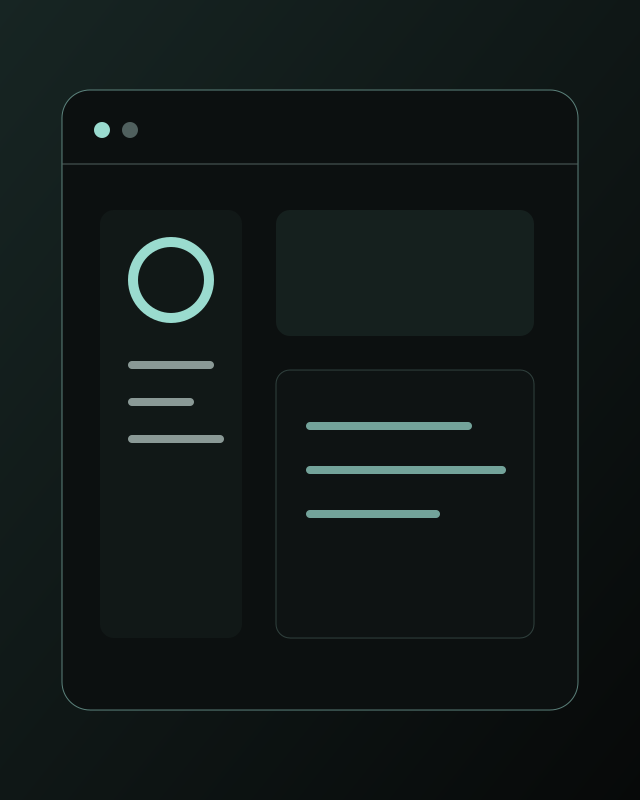
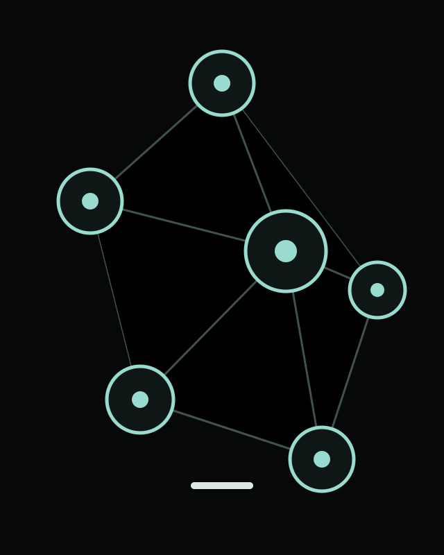
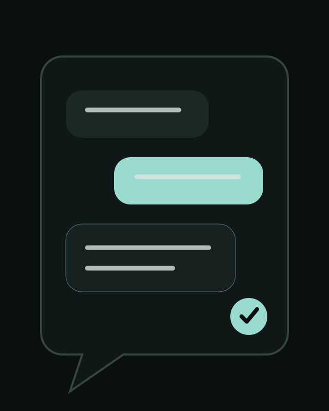
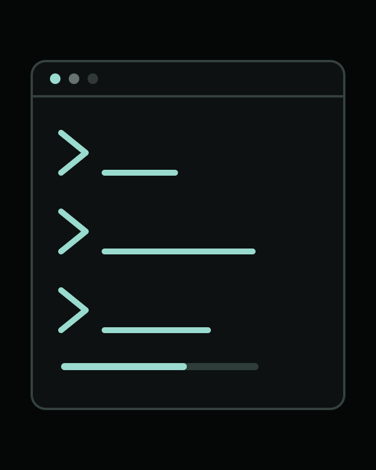
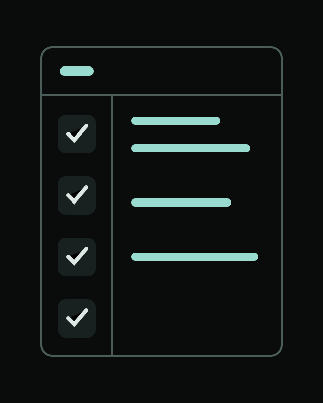
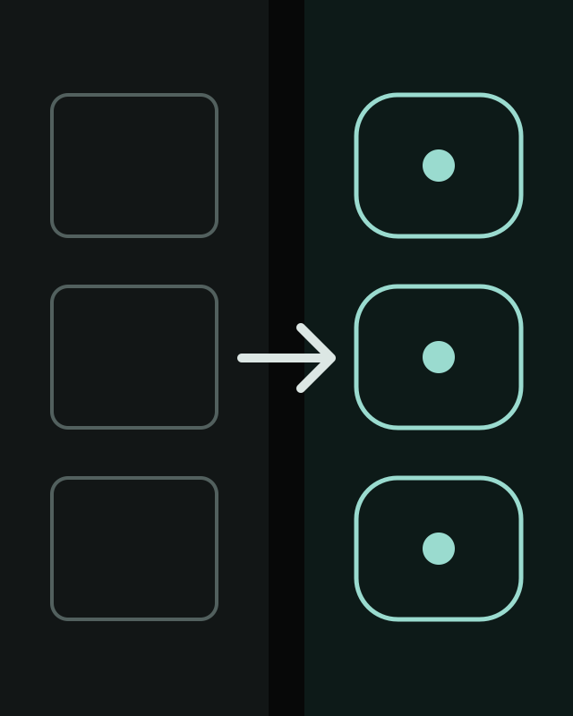
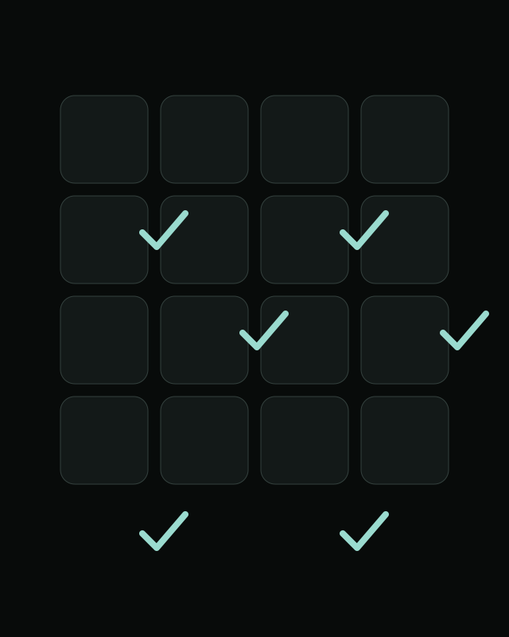
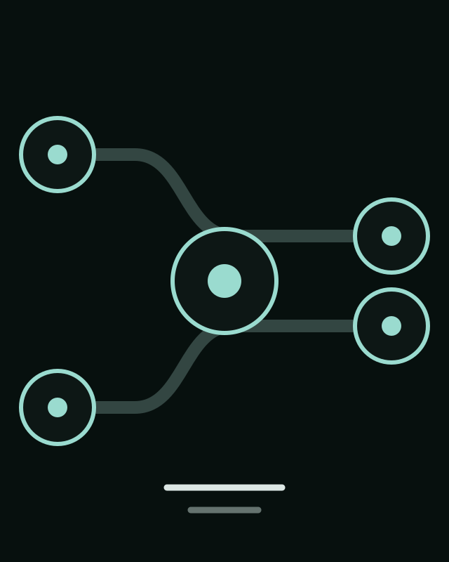
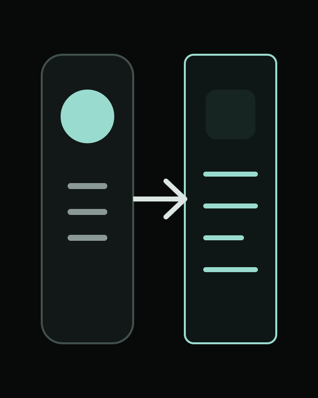
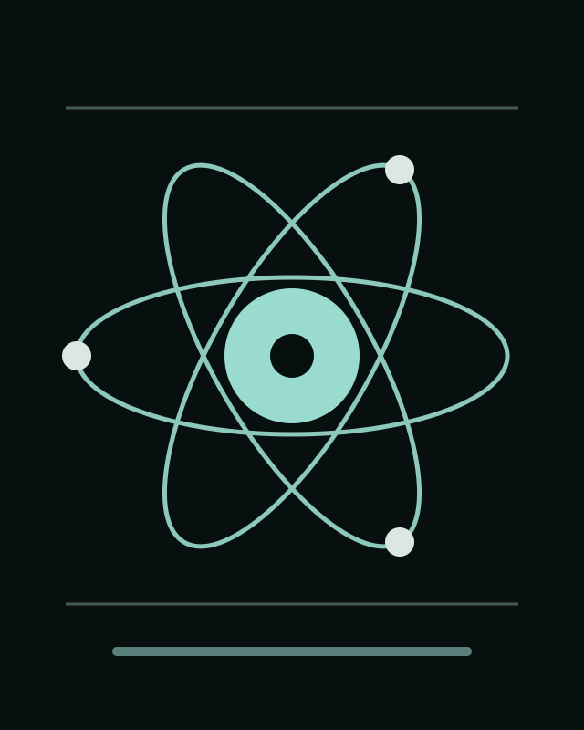

I lead AI-native platform and product engineering across physical devices, enterprise software, developer experience, and release evidence. My work turns difficult boundaries into systems that teams can operate and trust.
물리 장치·엔터프라이즈 소프트웨어·개발자 경험·릴리스 근거를 잇는 AI-native 플랫폼과 제품 엔지니어링을 리딩합니다. 복잡한 경계를 팀이 운영하고 신뢰할 수 있는 시스템으로 바꿉니다.
AI-NATIVE · DEVICE-TO-CLOUD · VERIFICATION
From device packetsto reliable AI products. 장치 패킷부터신뢰 가능한AI 제품까지.
Platform engineer who understands the device beneath the API.
01 / SYSTEM FIELD NOTES
Ten replaceable frames for the systems I build.
Temporary original SW visuals — replace with the curated activity set later









02 / CURRENT WORK
The newest work comes first.
01 / 2026 · PRODUCTIZING
BioStar Developer Portal
Browser API execution, device SDK emulator, MCP scenario history, and Linux/AWS sandbox in one developer loop.
1 engineer · 8 weeks · productizing02 / 2026 · IN PROGRESS
AI-native Angular-to-React modernization
A ~200K LOC mixed frontend is being rewritten with contract, unit, React, DOM, UI, CSS, and E2E gates.
~200K LOC · frontend team lead03 / 2021—2024 · CORE
Device, gateway, and distributed-event core
Device packets, identity flows, Spring Cloud Gateway, and distributed events connected across C++, Java/Kotlin, and web products.
40%+ event-performance gain03 / CAPABILITY
Six capabilities, one product loop.
The differentiator is not a long tool list. It is the ability to cross device, backend, web, agent, and infrastructure boundaries without losing the product question.
차별점은 긴 도구 목록이 아닙니다. 제품의 질문을 놓치지 않은 채 장치·백엔드·웹·에이전트·인프라 경계를 넘나드는 역량입니다.
AI
AI-native Product
Problem framing · architecture · full-stack · eval gates
JVM
Java / Kotlin
Spring Boot · gateway · service · identity
C++
Device Core
Packet · SDK · event · hardware debugging
TSX
React / TypeScript
Migration · DOM · UI · CSS · E2E
MCP
Agents & Tools
Scenario replay · natural language · RAG
AWS
Cloud / Sandbox
Linux · EC2 · Lambda · Docker · CI/CD
04 / POSITION
Breadth becomes valuable when it closes one product loop.
Network operations taught me production constraints. Radar, camera, FPGA, packets, and SDKs taught me physical constraints. Biometric access platforms taught identity, event, server, web, and cloud boundaries. Today I use that context to design AI-native developer platforms and verification systems as one product-engineering system.
네트워크 운영에서 운영 제약을, 레이더·카메라·FPGA·패킷·SDK에서 물리 제약을, 생체인증 출입통제 플랫폼에서 신원·이벤트·서버·웹·클라우드 경계를 배웠습니다. 현재는 이 경험을 하나의 제품 엔지니어링 체계로 묶어 AI-native 개발자 플랫폼과 검증 시스템을 설계합니다.
01Understand the physical boundaryPacket · device · SDK · gateway
02Shape it into a usable productAPI · web · sandbox · agent
03Prove behavior before releaseContract · unit · DOM · UI · CSS · E2E
05 / JOURNEY
Current direction first, foundations after.
- RESEARCH
Ph.D. research alongside practice
Study explainable VLM retrieval and hybrid quantum–classical model evaluation while continuing full-time engineering.
- AI / LEAD
AI-native platform and product leadership
Lead Developer Portal productization, a ~200K LOC frontend modernization, version-aware E2E, intern projects, and cross-team AI-native adoption.
- CORE / MSA
Biometric access-control core
Delivered Spring Cloud Gateway MSA, device features, identity flows, and distributed events; improved event performance by 40%+ and CPU work by about 50%.
- DEVICE / C++
Sensor software and public R&D
Developed Windows/C++ software for radar, camera, and FPGA IoT systems and documented device protocols and operating scenarios.
- WEB / OPS
Network management and enterprise web
Built IP configuration, transmission-network visualization, raw-data processing, and Jenkins delivery for SK Telecom TANGO.
06 / MENTORING
A year of turning project ambiguity into decisions
Across Codeit, an AI bootcamp, and SK Networks Family AI Camp cohorts 27 and 28, I have helped teams move from problem definition to technical choices, implementation, and verification.
Codeit·AI 부트캠프·SK Networks Family AI Camp 27기와 28기에서 문제 정의부터 기술 선택·구현·검증까지 팀의 의사결정을 지원해 왔습니다.
Traffic-dispute AI service
Problem framing, evidence boundaries, service flow, and feasible AI scope.
Personalized fashion recommendation
Recommendation logic, data assumptions, evaluation, and product experience.
Continuous project mentoring
Supported multiple AI service teams over roughly one year with architecture, implementation, and review feedback.
AI-assisted test generation workflow
Led three interns through an MR event, coverage measurement, LLM test generation, and re-measurement workflow.
07 / RESEARCH
Research that strengthens the evaluation habit
My active research explores explainable traditional-dance retrieval with expert knowledge and VLMs, and hybrid quantum–classical model selection under shared baselines and evaluation conditions. Both are works in progress.
전문가 지식과 VLM을 결합한 설명 가능한 전통무용 검색, 그리고 동일한 기준에서 고전 ML과 QML 후보를 비교하는 양자–고전 하이브리드 모델 선택을 연구합니다. 두 연구 모두 진행 중입니다.
Research questions and methods →08 / PUBLIC ARCHIVE
A professional life, recorded in more than projects
09 / CONTACT
Build the full loop.Prove that it works. 제품의 전체 루프를 만들고,동작한다는 근거를 남깁니다.
Open to conversations about AI platforms, developer experience, device-connected products, backend/platform leadership, and research collaboration.
AI 플랫폼·개발자 경험·장치 연결 제품·백엔드/플랫폼 리더십·연구 협업에 관한 대화를 환영합니다.